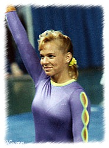

Brandy Johnson (USA)
1989 World V Silver Medalist
1989 American Cup Champion
1989 US National AA Champion
|
 Medal Total World
Championships:
1 Silver |
Brandy was born on April 30, 1973. She spent most of her gymnastics career at Brown's Gym in Orlando with coaches Rita and Kevin Brown; she trained briefly with Bela Karolyi prior to the 1988 Olympics. Brandy retired in 1990 and married Bill Scharpf, a professional waterskiier and stuntman. Their daughter, Sydney, was born in July 2000.
Competition Results
1986
Jr. JO Nationals: 1st AA, 1st V, 1st B, 1st FX
Jr. Peachtree Classic: 1st AA
North Shore Invitational: 1st AA, 1st V, 1st FX
USAIGC Championships: 2nd AA
1987
Chunichi Cup: 12th AA
Jr. USA Championships: 1st AA
North Shore Invitational: 1st AA, 1st V, 1st UB, 1st B, 2nd FX
1988
American Cup:
Intl. Mixed Pairs: 10th Team
Olympics: 4th Team, 10th AA, 5th V
US Classic: 2nd AA
US Olympic Trials: 4th AA
USA Championships: 6th AA, 2nd FX, 3rd V, 5th B
1989
American Cup: 1st AA
Cottbus International: 1st AA
Intl. Mixed Pairs: 9th Team
US Challenge: 1st AA
USA Championships: 1st AA, 1st V, 1st B, 1st FX, 5th UB
USA-USSR Dual Meet: 2nd Team, 1st AA
World Championships: 4th Team, 7th AA, 2nd V
1990
American Cup:
US Olympic Festival: 1st AA, 1st V
US Championships: 3rd AA, 1st V, 1st FX
World Cup: 6th UB, 7th B, 8th FX
1991
World Professional Champs: 1st V, 2nd B, 2nd FX
1996
Reese's International: 2nd AA
This page was created on April 12, 2000
and was last updated on August 19, 2000.
© Gymn Forum